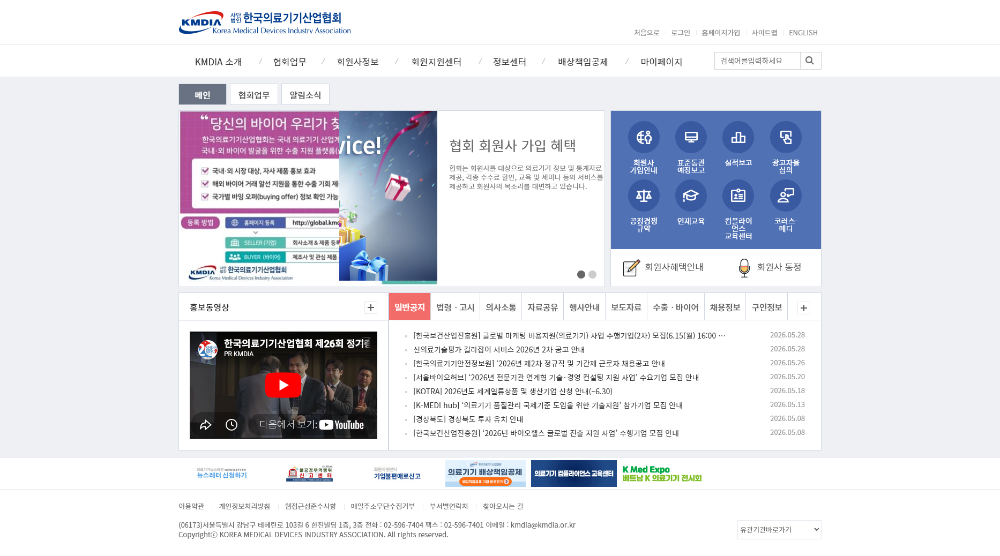
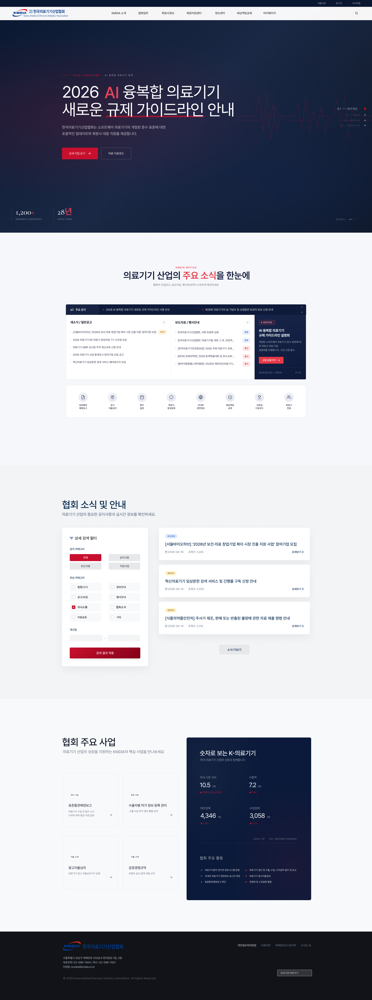
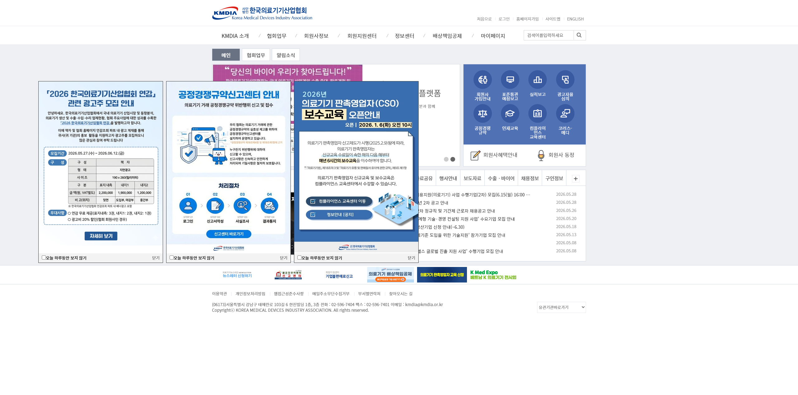
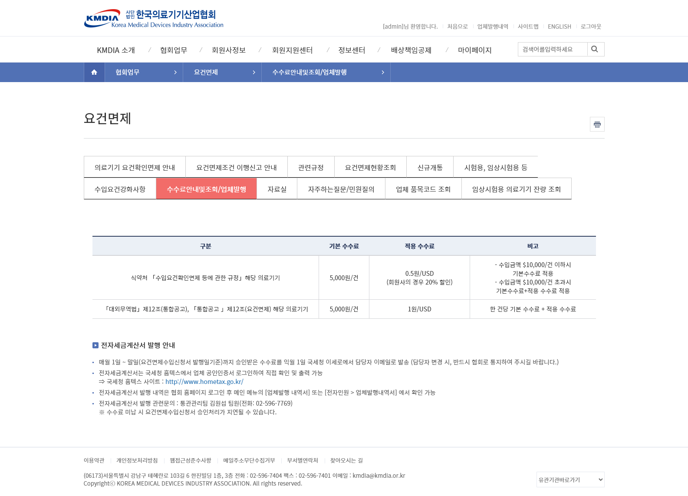
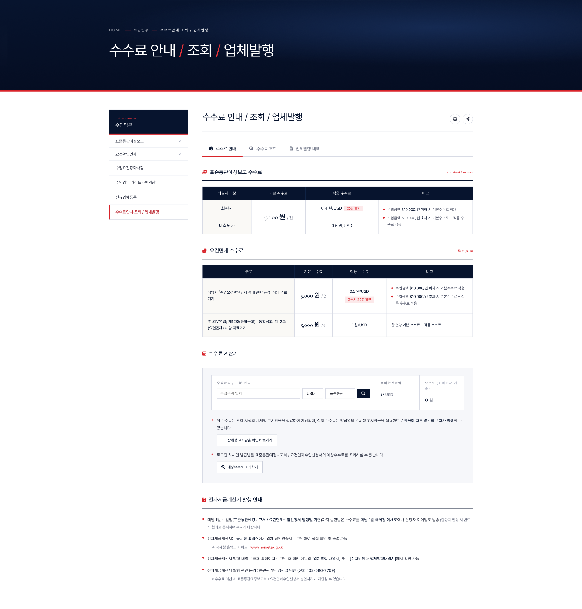
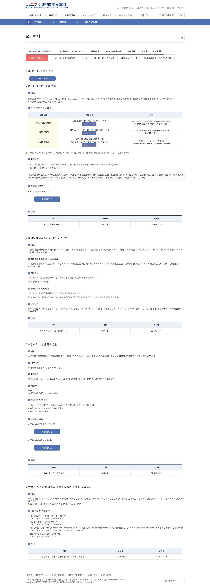
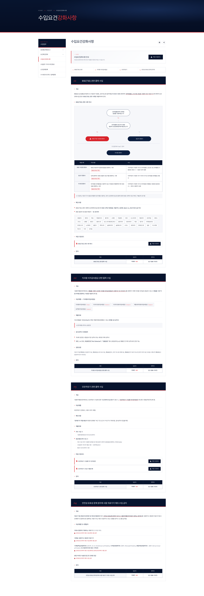

1. 프로젝트 개요
- 역할: 사용자 화면 IA 설계·화면 기획부터 퍼블리싱까지 단독 수행
- 프로젝트 개요: 협회 회원사 및 의료기기 산업 종사자를 위한 정보 접근성 향상과 브랜드 이미지 제고를 위한 전면 리뉴얼 프로젝트
주요 업무 및 성과
- 메뉴 구조(IA)·네비게이션 개선: 방대하게 분산된 협회 내 공지·정책 정보·통계 데이터의 흐름을 분석하여 유저 관점의 정보구조(IA) 최적화 및 직관적 GNB(Global Navigation Bar) 설계
- 이해관계자 요구사항 조율: 협회 내부 부서별 요구사항을 수렴·정리하고, 화면 설계(와이어프레임)로 시각적 합의를 도출
- 크로스 플랫폼 반응형 웹 기획·퍼블리싱: PC·태블릿·모바일 등 다양한 기기 환경에서 동일한 사용자 경험을 제공하도록 반응형 웹 표준 가이드라인 수립·구현
- 웹 접근성 및 표준 준수: 공공·협회 성격에 맞춘 웹 접근성 지침 표준을 적용하여 모든 사용자군에 대한 서비스 지속 가능성 확보
- 작업 규모: 서브페이지 35종, 공통 내비게이션(LSB) 컴포넌트 7종, 통합 팝업 시스템 1종을 기획부터 퍼블리싱까지 단독 수행
2. 배경 및 문제 정의
Before (문제점)
- 메인 진입 시 레이어 팝업 3개가 동시 노출 → 핵심 콘텐츠를 가리고 일일이 닫아야 진입 가능
- 핵심 메뉴(공지/회원사 혜택)가 여러 메뉴 안쪽에 묻혀 도달까지 클릭 수가 많음
- 웹 표준 미준수로 특정 브라우저에서 화면 깨짐 발생
- PC 전용 레이아웃 — 모바일 접근 시 가독성 저하
기획 타겟 다각화 → IA 배치 결정
| 타겟 | 핵심 니즈 | IA 배치 |
|---|---|---|
| 회원사 | 지원사업·혜택·수수료 확인 | 자주 찾는 메뉴를 퀵메뉴·대시보드 상단 전진 배치 |
| 일반 대중 | 산업 정보·소식 탐색 | '의료기기 주요 소식' 탭형 대시보드로 분리 |
| 유관기관 | 정책·규제 확인 | 메인 배너 + 정책 메뉴로 동선 분리 |
3. 프로젝트 목표 및 핵심 타겟 지표
본 프로젝트는 런칭 준비 단계로, 런칭 후 아래 핵심 지표(KPI) 개선을 목표로 구조화되었습니다.
- 정보 탐색 동선 최적화(UX): 자주 찾는 메뉴를 메인 대시보드·탭 UI로 전진 배치해, 원하는 정보에 더 빠르게 도달하도록 개선
- 정량적 UI 효율화: 동시 노출되던 다중 레이어 팝업 3개를 1개의 '통합 팝업 카드 UI'로 통합 관리하여 시각 공해 차단 및 메인 인지율 향상
- 크로스 플랫폼 반응형 커버리지: 기존 반응형 대응이 미흡했던 부분을 보완하고, 크로스브라우징·웹 접근성을 준수하는 반응형 웹으로 개선해 모바일·태블릿 이탈률 방지 기반 마련
- 잠재적 CS 운영 공수 절감: '수수료 계산기'·'프로세스 맵' 도입으로 단순 서식 위치·계산 관련 행정 문의 대폭 감소 기대
4. 메인 팝업 및 홍보·바로가기 배너 영역 개선
기존 팝업/배너 영역의 핵심 문제
- 화면을 가리는 다중 팝업: 메인 진입 시 여러 레이어 팝업이 동시에 떠 메인 콘텐츠를 완전히 가리고, 일일이 [닫기]를 눌러야 하는 불편
- 모바일 제어 불가: 모바일에서 팝업창이 화면 밖으로 벗어나거나 [오늘 하루 보지 않기] 버튼이 너무 작아 터치 오류·이탈 유발
- 시선 분산 배너 영역: 크기·색상·톤앤매너가 제각각인 배너가 나열돼 시선이 분산되고, 정작 중요한 공지가 눈에 띄지 않음
UX/UI 개선 전략 (TO-BE)
- 주요 공지 띠 배너 도입: 가장 긴급한 핵심 공지를 팝업 대신 최상단에 상시 노출해 콘텐츠를 가리지 않음
- 팝업 모아보기(통합 모달): 개별 팝업 대신 하나의 팝업창 안에서 탭/슬라이드로 여러 공지를 넘겨보는 '통합 팝업 카드 UI'로 구조화
| 개선 항목 | AS-IS | TO-BE | 기획 의도 |
|---|---|---|---|
| 팝업 노출 방식 | 사방에 흩어져 뜨는 다중 레이어 팝업 | 중앙 정렬된 1개의 통합 팝업 (내부 슬라이딩) | 시각적 공해 감소 및 메인 UI 시인성 확보 |
| 홍보·바로가기 배너 레이아웃 | 크기·색상이 제각각인 고정형 배너 나열 | 일관된 톤앤매너의 그리드(Grid) 배너 존 구축 | 협회 브랜드 신뢰도 제고 및 시선 집중 |



5. 수수료 안내/조회/업체발행 · 수입요건강화사항 가이드
② 수수료 페이지 — 복잡한 표준통관예정보고·요건면제 수수료 기준이 긴 텍스트 표로 방치되어 직접 계산해야 했던 페이지를, 상단 탭(Tab)으로 접근 단계를 단축하고, 흩어져 있던 수수료 정보와 계산 기능을 '수수료 안내/조회/업체발행' 한 페이지로 통합·재구조화하고 계산기 UI를 직관적으로 재설계했습니다. 복잡한 조건별 테이블을 PC·모바일 반응형으로 코딩 최적화했습니다.
③ 수입요건강화사항 가이드 — 회원사가 숙지해야 할 필수 법정 행정 절차가 빽빽한 텍스트 공문으로 나열되어 가독성이 떨어졌습니다. 수입승인 절차를 한눈에 인지하도록 시각적 프로세스 맵(Flow Chart) UI를 도입하고, 강화사항 항목별로 서식 다운로드·가이드라인 링크를 유기적으로 배치해 행정 공수를 단축했습니다. 공공·협회 가이드라인에 맞춘 시맨틱 마크업·웹 접근성을 준수했습니다.




④ 내부 실무진용 CMS 사용성 개선 (향후 계획): 향후 내부 운영 효율화를 위해, IT 지식이 없는 직원도 보도자료·공지·배너를 쉽게 관리할 수 있는 관리자(Admin) UI 개선을 제안·검토할 계획입니다.
6. 문제 해결 과정
제한된 조건 속에서 우선순위를 정하며 마주친 문제와 그 해결 과정을 S-A-R로 정리했습니다.
관심 태그 기반 개인 맞춤형 공지 필터 설계·구현
S 협회 공지가 일괄 나열되어, 사용자가 원하는 정보를 찾기 번거로운 구조였음.
A 사용자가 관심 태그(카테고리)를 선택해 원하는 공지만 필터링해 볼 수 있는 개인 맞춤형 공지 화면을 설계·구현함.
R 전체 나열 방식에서 사용자 선택 기반 개인화로 전환해, 사용자가 관심 있는 공지를 빠르게 찾아볼 수 있도록 함.
한정된 일정 안에서 모바일 대응 우선순위 결정
S 수입업무·수수료 등 표가 많은 페이지가 한둘이 아니었고, 일정 안에 전부를 모바일 완성도까지 끌어올리긴 어려운 상황이었음.
A 모든 표를 균일하게 처리하는 대신, 회원사 이용 빈도와 문의 연관성이 높은 표(수수료·수입요건)를 우선순위 상위로 두고 먼저 카드형 UI로 재설계. 나머지는 공통 반응형 규칙으로 일괄 처리하는 식으로 공수를 배분함.
R 한정된 일정 안에서 체감 사용성이 가장 큰 페이지부터 완성도를 확보. 핵심 페이지 모바일 가독성을 우선 달성하고 전체 일관성도 유지.
공공 정보 접근성 강화를 위한 SEO 및 마크업 최적화
S 기존 홈페이지는 비표준 마크업과 이미지 위주의 정보 제공으로, 포털 검색 노출이 저조하고 다양한 환경에서의 접근성이 떨어지는 문제가 있었음.
A 디자인·퍼블리싱을 총괄하며 시맨틱(Semantic) 태그로 문서 구조를 재정비하고 웹 표준을 준수. 검색엔진 최적화(SEO)와 웹 접근성 지침을 적용해 어떤 디바이스·환경에서도 정보가 왜곡 없이 전달되도록 구현함.
R 공공·협회 성격에 맞는 정보 공공성을 확보하고, 검색 노출과 크로스 환경 접근성을 개선할 기반을 마련. (※ 검색 노출 효과는 런칭 후 확인 가능하며, 지표 측정은 협회 운영 주관)
7. 기대 효과
실무 부서 관점
수수료 계산기·시각적 프로세스 맵 도입으로 "서식 위치·계산 방법을 묻는 단순 문의 전화"가 크게 줄어들 것으로 기대.
대외 이미지 관점
반응형 구현으로 외부 미팅 중 모바일 활용이 가능해져, 협회의 대외 전문성·브랜드 인상 개선이 기대됨.
8. 런칭 후 고도화 계획
- 효과 측정 체계 제안: 정량 지표 측정은 협회 운영 주관이므로, 런칭 시 분석 도구(GA4 또는 서버 접속 로그) 도입과 함께 ①핵심 메뉴 도달 클릭 수 ②모바일 유입 비중·이탈률 ③수수료·서식 관련 행정 문의 건수(부서 협조 주간 집계)의 베이스라인 확보 → 개선 전후 비교가 가능하도록 측정 항목을 설계해 제안
- 운영 안정화·컴포넌트 가이드라인: 새롭게 구축된 통합 팝업 시스템과 반응형 UI 컴포넌트에 대한 퍼블리싱 가이드라인을 체계화
- 실무자 맞춤형 매뉴얼 배포: 내부 행정 담당자가 메인 대시보드·팝업을 쉽게 관리하도록 운영 매뉴얼을 배포해, 개발 부서 개입 없이 안정적으로 운영할 수 있도록 지원할 계획
- 회원사 VOC 수집·개선: 프로세스 맵·통합 검색 필터에 대한 실무자 피드백을 수집해 검색 키워드 태그 고도화 및 2차 사용성 개선(Iteration)에 반영
9. 회고
"측정 기반 없는 개선의 한계를 체감하고, 실현 가능성을 기획 단계부터 검증하는 PM으로 성장한 프로젝트."
잘한 점
- 방문자 수 같은 데이터가 없는 상황에서, 기존 사이트의 메뉴 구조를 하나하나 직접 뜯어보고 협회 실무 담당자 의견과 부서별 요구사항을 반영해 "무엇부터 고칠지"의 기준을 스스로 만듦. 데이터가 없다고 감으로 결정하지 않은 것이 가장 잘한 일.
- 기획안을 다른 사람에게 넘기지 않고 직접 화면으로 구현하면서, 기획 단계에서 정한 의도가 끝까지 흐트러지지 않고 화면에 그대로 반영되는지 확인할 수 있었음.
아쉬운 점 & 다음에 다르게 할 것
- 방문 데이터를 측정할 도구(GA 등)를 프로젝트 시작 시점에 붙이지 못해, "개선이 실제로 효과가 있었는지"를 숫자로 확인하는 일이 런칭 이후로 미뤄짐.
- 부서별 요구사항을 기획 초반에 한 번에 모으지 못하고 진행 중에 추가 요청이 들어와, 이미 잡아둔 화면 구성을 조정하는 일이 있었음. 이해관계자가 많을수록 요구사항 수집 시점을 앞당기고 마감선을 명확히 해야 함을 배움.
- 측정 도구 설치와 "개선 전 수치 확보"를 시작 단계의 필수 항목으로 넣을 것. 퍼블리셔로서 좋은 기획이 구현 단계에서 무너지는 것을 봐온 경험을 살려, 처음부터 "실제로 만들 수 있는 기획"인지 검증하며 일하는 PM이 되고자 함.
※ 본 프로젝트는 런칭 준비 단계로, 상세 작업 URL 및 화면 설계서 등은 대외비 보안 정책에 따라 생략되었습니다.